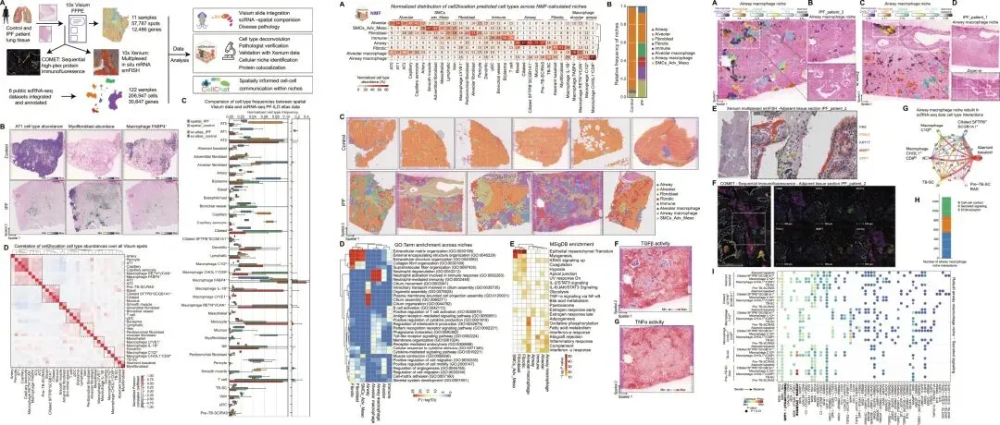
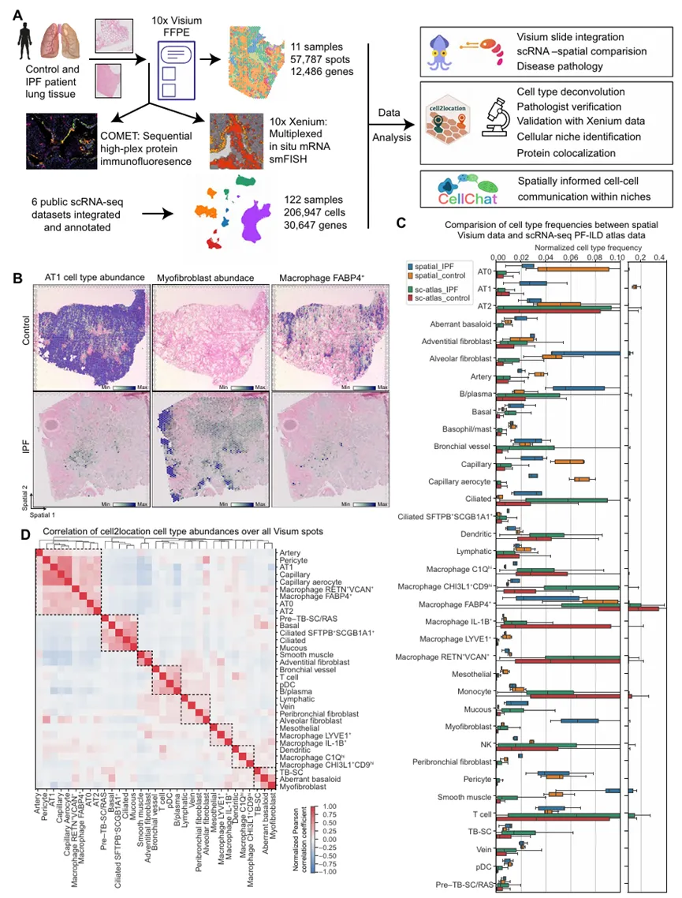
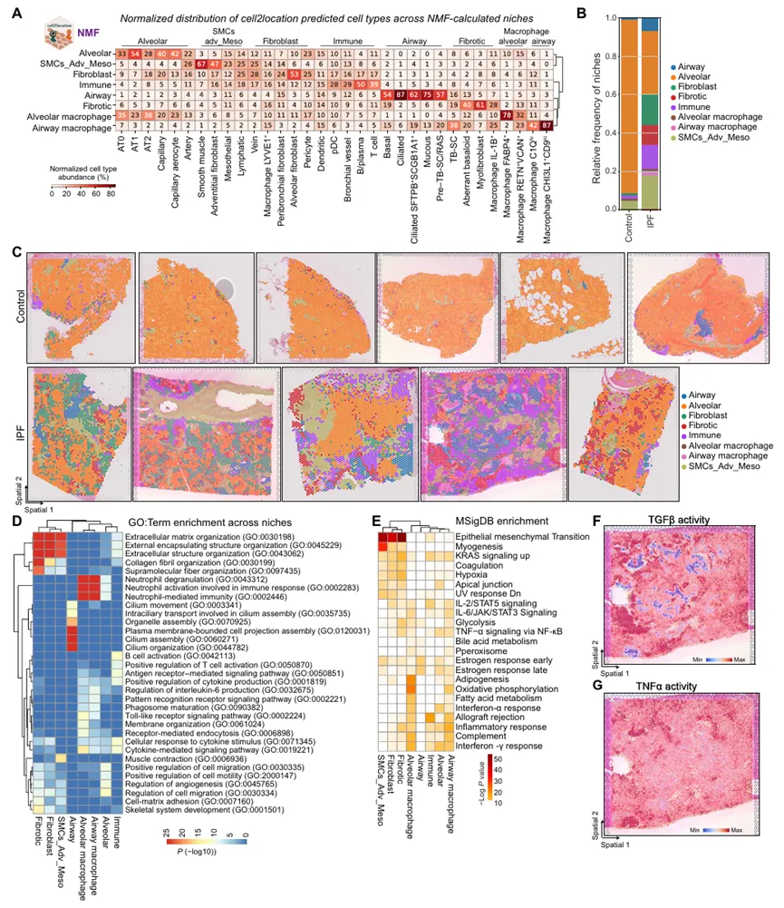
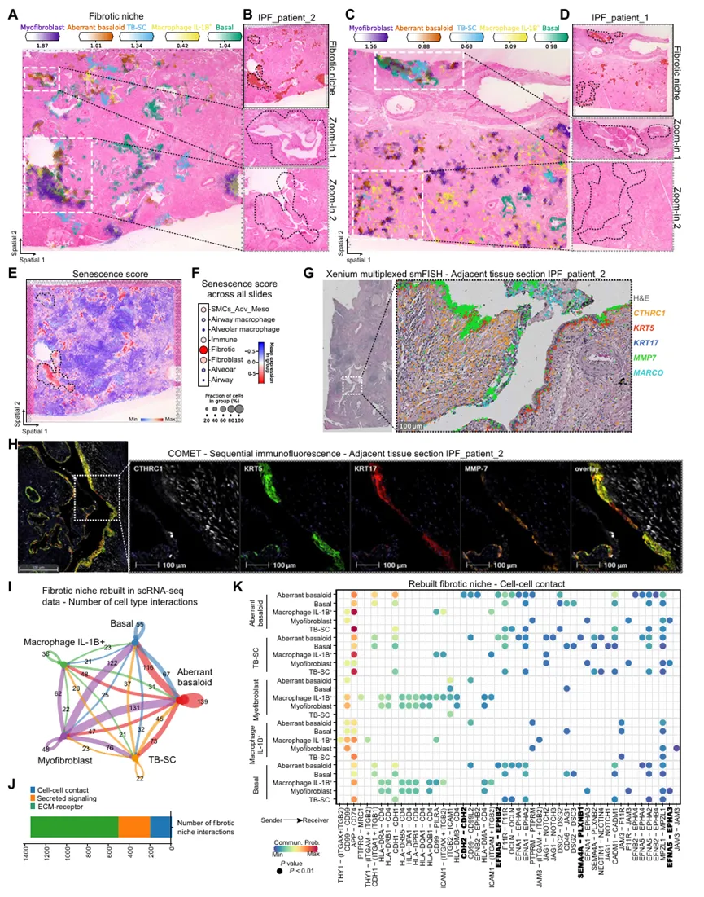
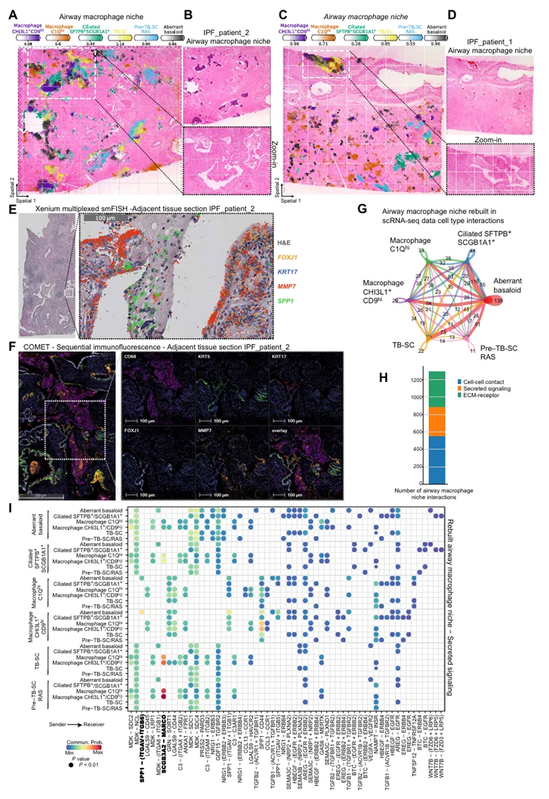
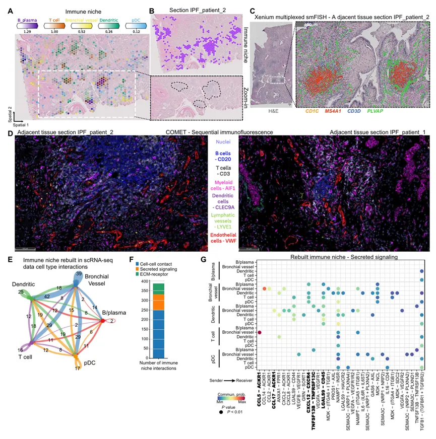

《Science Advances》11例样本图谱文章，空间转录组揭示特发性肺纤维化病理特征
原文：https://mp.weixin.qq.com/s?__biz=MzAwMzIzOTk5OQ==&mid=2247534707&idx=1&sn=2c093a1d2e8487d644b812c117ccc9d1&chksm=9b3c3123ac4bb835d14d3bda6b2431dcb96028aec40f40f80550c63a3683f637338fe1750ed5#rd 合集：文献速递
** **
一、写在前面
此次分享的文章Spatial transcriptomic characterization of pathologic niches in IPF （IF=12.5）发布于**《 Science Advances》。显然这是一篇“图谱类”文章，虽然单细胞发图谱比较困难，但空转仍有回旋的余地。 **
当前IPF研究存在两大核心瓶颈，限制了对疾病机制的深入理解和药物开发。首先是scRNA-seq 的缺陷：虽能识别IPF相关细胞类型（如纤维化特异性细胞），但会破坏组织原始结构，导致细胞空间位置信息丢失，且机械提取过程会遗漏脆弱细胞（如肺泡 1 型细胞），造成细胞群分布失真。其次现有疗法仅针对肌成纤维细胞活性，无法覆盖其他未知病理过程，IPF 仍缺乏更全面的治疗方案。
更多单细胞/空转相关内容分享可见：82h视频教程《Python版scRNA-seq分析全流程》100个小时沉浸式学会scRNA-seq数据分析69h空转视频！从 “零基础”到“复现《Nature Genetics》代码”
原文链接：https://www.science.org/doi/10.1126/sciadv.adl5473
文章可视化集锦：

如果需要单细胞数据分析教学、生信热点全文复现、自测数据个性化分析辅导、常态化实验学习，欢迎联系客服微信[Biomamba_zhushou]。二、主要内容
该研究通过对IPF患者和对照者的FFPE组织切片，应用Visium和 Xenium技术分析空间转录组。整合已发表的肺纤维化和间质性肺病（PF-ILD）scRNA-seq 数据集，通过生物信息学解卷积Visium斑点的细胞类型组成，实现细胞类型与基因的组织定位映射。

该研究涵盖了三名IPF患者和四名对照患者，样本总数为11个。此外纳入外部数据集（六个来自人肺的ILD和对照组的单细胞测序的结果）。通过集成PF-ILD图谱的带注释的scRNA-seq数据对每个点卷积、病理注释进行数据分析。通过将Visium 数据与集成的 PF-ILD scRNA-seq 图谱进行比较，scRNA-seq 更擅长捕获骨髓细胞（如巨噬细胞），而空间转录组在肺泡细胞、结构细胞的检测上有独特优势；同时，两种技术均能清晰区分 IPF 与对照组织中病理细胞（如异常基底样细胞、肌成纤维细胞）的丰度差异，为研究肺纤维化的细胞组成提供了多技术验证的依据。

该研究将 cell2location 逐个细胞类型的点输出矩阵转换为细胞类型和生态位以及斑点和生态位的矩阵，确定了 8 个具有不同细胞类型谱和相应标记基因特征的细胞生态位。进一步评估了这些生态位在对照和 IPF 组织中的相对频率。对照组织中，肺泡生态位占比最高，其他生态位占比极低；IPF 组织中，肺泡生态位占比显著下降，纤维化生态位、免疫生态位、气道巨噬细胞生态位等占比大幅上升，反映出 IPF 肺组织中正常结构破坏，病理生态位占据主导的特征。进一步通过GO分析分析不同生态位的细胞功能特征。值得注意的是MSigDB 基因可以表征纤维化生态位，TGFβ和TNFα也可以代表不同的生态位点。

纤维化生态位
该文章基于 NMF 和频率分析着眼于生态位中包含的细胞类型。发现纤维化生态位优先位于气道周围。肌成纤维细胞也可以单独出现在更多的肺泡区域。异常的基底细胞在视觉上定位在气道上，并且总是与肌成纤维细胞一起发现。应用 Xenium 多重 mRNA 原位杂交来验证细胞类型标记基因在 patient_IPF_1 和 patient_IPF_2 的相邻组织切片。KRT5KRT17 异常基底细胞与CTHRC1细胞、KRT5KRT17 基底细胞、MMP7 气道细胞和MARCO表达巨噬细胞的巨噬细胞受体的共定位。KRT5KRT17 与 CTHRC1 肌成纤维细胞在 KRT5KRT17 基底细胞和基质金属蛋白酶 7（MMP7）气道细胞旁边的 CTHRC1 肌成纤维细胞共定位。异常的基底细胞主要与肌成纤维细胞相互作用，紧随其后的是基底细胞和结核病-SC，为其气道（如特征）提供了进一步的证据。而肾上腺素通路是除了钙粘蛋白（CDH）和缺口信号传导之外的主要贡献者。进一步分析发现，受体 EPHB2 由异常基底细胞特异性表达，而受体 EPHA3 似乎对肌成纤维细胞具有特异性。两者都接收到来自 EFNA5 的信号，并且主要由气道上皮细胞群表达。纤维化生态位内的细胞间通讯可归因于 ECM-受体相关的配体-受体对——其中超过 60%可以分配给胶原蛋白、层粘连蛋白、血栓反应蛋白和纤连蛋白通路。

气道巨噬细胞生态位
基于非负矩阵分解（NMF）分析结果（图 2A），研究聚焦气道巨噬细胞生态位的核心细胞类型，通过组织切片观察验证了关键细胞的共定位关系：CHI3L1 + 巨噬细胞、C1Q + 巨噬细胞与异常基底细胞、TB-SC 细胞（终末支气管分泌细胞）、SFTPB + 纤毛细胞在 IPF 组织切片中形成稳定的共定位群体。这一结果进一步支持了气道巨噬细胞生态位的空间定位特征：该生态位优先定位于看似宽大但实际为远端的气道区域，且特异性与 SFTPB + 纤毛细胞共定位（图 2A、4A、图 S15）。细胞类型分布统计显示，肌成纤维细胞几乎仅存在于纤维化生态位，而异常基底样细胞不仅是纤维化生态位的核心细胞，也有 20% 的比例参与构成气道巨噬细胞生态位，这一共定位特征通过组织切片观察得到确认（图 2A、4A、C）。利用 Xenium 多重 mRNA 原位杂交技术，研究在 mRNA 水平进一步验证了气道巨噬细胞生态位的细胞构成与空间结构：气道管腔内壁由 FOXJ1 + 纤毛细胞、KRT17+TB-SC 细胞、MMP7 + 气道细胞构成，而管腔内则聚集大量 SPP1 + 巨噬细胞（主要为 CHI3L1 + 巨噬细胞），各类细胞的标记基因表达区域高度重叠，明确了 “上皮细胞衬里 - 巨噬细胞填充” 的管腔结构特征（图 4E、图 S7C、G；图 S8C、G、K）。在相邻组织切片的蛋白质水平验证中，采用 COMET 高重序贯免疫荧光技术观察到：气道结构内壁可检测到纤毛细胞标志物 FOXJ1、TB-SC 细胞标志物 KRT17、气道细胞标志物 MMP7 的蛋白质表达，而气道管腔内充满巨噬细胞特异性标志物 CD68 阳性的细胞（图 4F、图 S9B、D）。这一结果与 mRNA 水平验证完全吻合，形成了 “基因 - 蛋白质 - 细胞定位” 的完整证据链，充分证实了气道巨噬细胞生态位的真实性与空间结构特征。

免疫生态位
免疫生态位是 IPF 组织中普遍存在的第三个病理生态位，核心细胞包括 B 细胞、浆细胞、T 细胞、浆细胞样树突状细胞（pDC），以及 PLVAP + 异位内皮细胞群（命名为支气管血管细胞）（图 S5B）（16,37,38）。与健康对照相比，构成该生态位的所有细胞类型在 IPF 组织中均显著增加，且聚集形成独立病灶，在 H&E 染色切片中呈灰色可见（图 5A、B；图 S18）。通过组织切片验证，上述细胞形成稳定共定位群体，且标志性基因表达与细胞类型高度匹配：B 细胞和浆细胞表达 CD19、CD79A、MS4A1，T 细胞表达 CD3D，支气管血管细胞表达 PLVAP（图 5A、B；图 S19A-C），进一步确认了细胞构成的准确性。作者进一步通过mRNA与蛋白质水平进行了验证。此外，细胞间通讯发现支气管血管细胞是免疫生态位的核心调控细胞，对生态位内及与其他细胞的配体 - 受体相互作用贡献最大，主要依赖于两个轴：CXCL12-CXCR4 轴和CCL17/CCL5-ACKR1 轴。
三、创新点
该研究主要识别出8 种不同的细胞组织微环境（生态位），每种都有独特的细胞组成和定位。发现3 种 IPF 组织独有的生态位：纤维化生态位：由肌成纤维细胞和异常基底细胞组成；气道巨噬细胞生态位：含有骨桥蛋白（SPP1）巨噬细胞；免疫生态位：主要包含淋巴细胞，周围环绕紊乱的内皮细胞。最后，通过多重原位 mRNA 成像和高重序贯蛋白质免疫荧光，验证了这些生态位的真实性。
更多单细胞/空转相关内容分享可见：82h视频教程《Python版scRNA-seq分析全流程》100个小时沉浸式学会scRNA-seq数据分析69h空转视频！从 “零基础”到“复现《Nature Genetics》代码”
如何联系我们

 留一个领取资料、开箱即用的单细胞分析镜像的微信号[Biomamba_zhushou]，方便各位随时交流。同时我们也构建了交流群矩阵，欢迎大家入群讨论。
大家可以阅读完这几篇之后添加给生信入门初学者的小贴士
没有检索，就没有发言权
留一个领取资料、开箱即用的单细胞分析镜像的微信号[Biomamba_zhushou]，方便各位随时交流。同时我们也构建了交流群矩阵，欢迎大家入群讨论。
大家可以阅读完这几篇之后添加给生信入门初学者的小贴士
没有检索，就没有发言权
已有生信基地联系方式的同学无需重复添加

 您点的每个赞和在看，我都认真当成了喜欢
您点的每个赞和在看，我都认真当成了喜欢